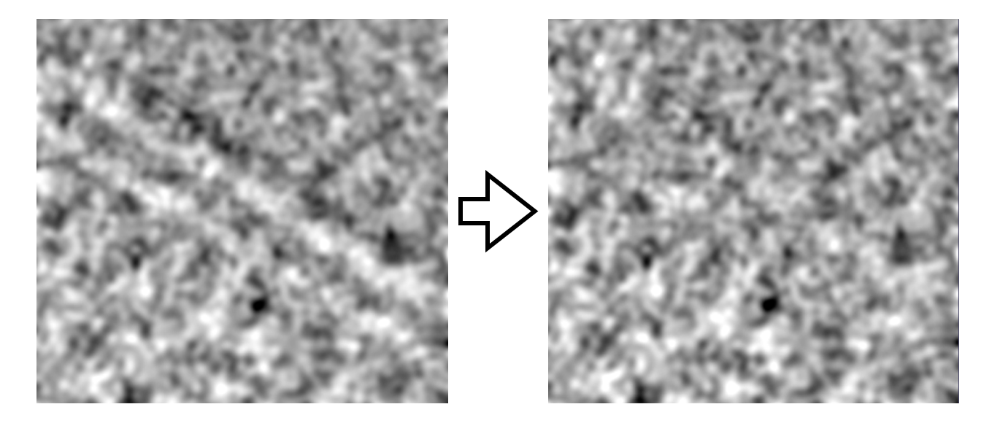

Welcome to MemXTerminator Wiki!¶
MemXTerminator is a software for membrane analysis and subtraction in cryo-EM.

MemXTerminatorOverview¶
This software utilizes 2D averages and their corresponding alignment information, employing methods such as Radon transform, cross-correlation, L1 norm, Bezier curves, Monte Carlo simulations, and Genetic Algorithm. It analyzes and subtracts membranes of any shape in cryo-EM, ultimately producing particle stacks and micrographs with membrane signals removed, which are suitable for subsequent membrane protein analysis.
Features¶
- Capable of analyzing biological membranes of any shape, including simple lines and arcs, as well as more complex shapes like S or W curves;
- Accurately locates and subtracts biological membrane signals;
- Utilizes GPU and CUDA acceleration to enhance computational speed;
- Features a user-friendly GUI for ease of use.
Requirements¶
- This software requires a GPU and CUDA acceleration. So, the installation of CUDA drivers and libraries is necessary.
- pyem is also needed to convert cryoSPARC’s
.csfiles to Relion’s.starformat for processing.
Installation¶
For specific installation methods, please refer to the Installation section.
Usage¶
This software has a user-friendly GUI. To use this software, simply type:
MemXTerminator gui &
For detailed usage tutorials, please refer to the Usage section.
License¶
This software is licensed under GPL v3.0. 
Acknowledgement¶
Thanks to Jack(Kai) Zhang@Yale MB&B for his guidance.
Contributing¶
Always welcome! This software may still has room for improvement such as updating the usage documentation, improving the GUI design, and enhancing the software's usability.
I am still working on improving this software. More exciting features are on the way!
Contact¶
If you have any questions, please feel free to contact me: zhen.victor.huang@gmail.com